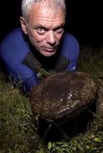
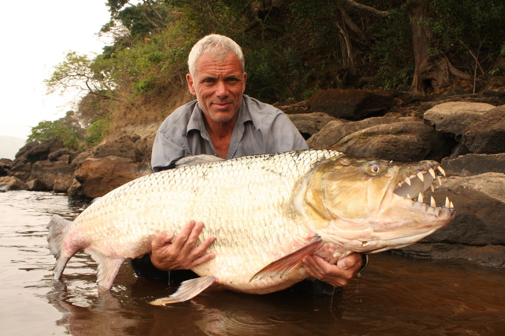
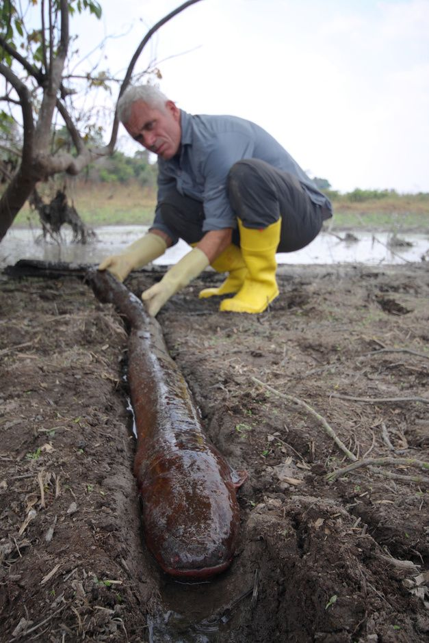
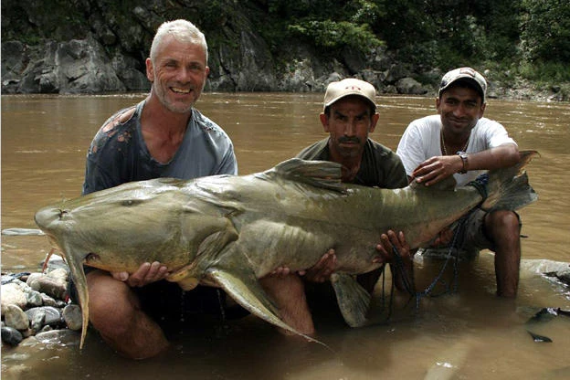
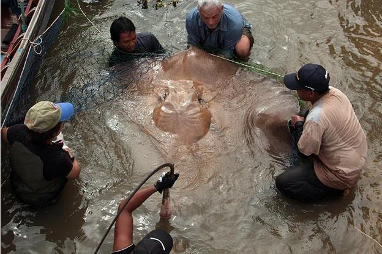

Jeremy Wade has made enormous strides to capture the most elusive creatures that roam our rivers, our seas, and our oceans. With these accomplishments throughout his career he cemented himself to be a formidable fisherman and with his extensive amounts of catches here are the ones that I myself believe to be his greatest catches.
The Kappa is a folklore that Wade learns during his trip to Japan. A Kappa is known for having a beak-like feature with a turtle-like body but as flexible as lizards. With that knowledge Wade determines that the largest creature that could have abducted children is the Japanese Giant Salamander that resides in the rivers and are known to be the largest amphibians in the world. It can grow up to 1.8m long and with the knowledge Jeremy Wade hand catches the amphibian and puts an end to the mystery that surrounds the folklore of The Kappa.
Stories of a fish taking lumps out of people’s bodies, scars to back them up, alligators washing up dead with huge holes in their bodies is what brought Wade to the Congo once again. Jeremy Wade travels deep into the Congo River in search for a predator that puts sharks to shame. The Goliath Tigerfish is known as the most deadliest river monster due to its ferocity, its sharp teeth, and strong, large, body.
Judging by the name, many of us who haven’t explored the rivers or marine life would be rather confused by the name of a fish that sounds like the work of fiction. As Wade travels across South America and into the Amazon River he hears stories that start to resemble something out of a nightmare. Children are running home with burn marks on their bodies, bodies are washing up with nothing but a dark spot seemingly like an electric shot done in the water. With the information he sets out to find and put an end to the stories by locating the electric eels which have become a reality in the Amazon River.
Catfishes are caught around the world and are known to use their cat like whiskers to look for food by feeling for movement in the water. They eat their food by swallowing the fish whole and in some cases, humans are caught in the crossfire. Found in the Kali River in India this fish could be considered one of Jeremy Wade’s most challenging catches. The catfish broke loose from his grip and to gain more line to reel it back him Wade had to take a huge risk. Either lose the fish or rush into the rapid waters which could risk death but, that’s what he did. At 5 feet and 7 inches, it is considered one of the largest catfishes caught in his career.
The Giant Freshwater Stingray is one of the largest freshwater fish in the world. Found in Indochina and Borneo they are considered endangered due to habitat degradation and over-fishing. Stories of a large saucer shaped object in the water plagued towns that were in areas of this freshwater creature and that is what Wade took in order to capture and put an end to these stories. After minutes of trying to reel this creature in, it resulted in one of the largest river monsters being shown on television as seen below, coming in at a 7 feet in diameter.
